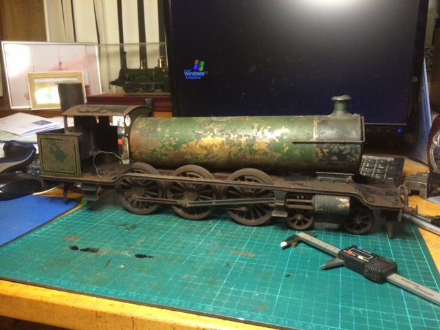

Today, 'Abergavenny' is queen of the Gauge 2 Model Railway and the most powerful locomotive in the Gauge 2 fleet. She has been joined by two more Gauge 2 'Abergavenny's, both live steam versions, one in my own collection and one in the USA.
Here's Abergavenny out on the line with the very heavy 7 coach L&NWR set, the yellowed colours of which lead some people to conclude that they are a Brighton set! Sadly no Gauge 2 Brighton coaches are known to exist, but LBSCR tank engines did work L&NWR stock to Rugby on the 'Sunny South Special' along the main line before the First World War, and within sight of where this photograph was taken!

This large locomotive would have been attractive to model locomotive manufacturers because of the room it provided for the mechanism and the little known firm of C. Butcher & Co., of Franklin Road, Watford produced this one in Gauge 2. This is the only known Gauge 2 model by Butcher's known to survive.
The loco came up in very poor condition at the SAS auction before Christmas 2019.

The model is built to a very high and almost dead scale standard, quite possibly in late 1910 when the prototype came out. The original paint scheme, which has been preserved, is a green livery and not at all LBSC. This was a puzzle initially, but it came to light that the prototype was kept in works grey for a considerable time after going into service, perhaps leaving Butcher with a dilemma since a grey model might not have been to his customer's taste.
The paintwork shows the effect of long storage in a not always dry place, maybe since the First World War, depending on who the original owner was....

It's powered by a Greenly 'boiler motor', a wound field arrangement of startling inefficiency, requiring 4A running current! Originally 3 rail with plunger pickups, the motor was got to run with 3 x 18650 Lipo cells, as used in the Tesla car, giving about 30 mins run time, with a protection PCB, giving 11.1 volts which is just enough. Here it is as received from the auction, spinning up with an original inhabitant still clinging to the field coil!

Notice the 'reversing engine' at right. This has been replaced for now by a bridge of Schottky diodes while I investigate means of re-magnetising the original mechanism. But the loco is running on the original motor, which sounds a little like a petrol engine in operation! Here's the reversing engine cleaned up:

Unfortunately it proved impossible to
prevent the motor overheating and melting the commutator
connections and after much experimentation (and re-winding) it
was decided that a modern motor would have to be substituted
until the mysteries of 1910 electrical engineering could be
better understood.
As you can see, the loco paintwork
presents a dilemma: It's very poor, but still original, and
I'm reluctant to touch it. However, the other side tank was
missing and I had to make a replacement (thanks to Malcolm
High of Model Engineer's Laser) so new paint will be needed. I
also made a new intermediate gear (I've noticed many antique
locos seem to have missing gears, perhaps because people play
about with the motors). This one I made in 3D sintered nylon
courtesy of Shapeways and so far it's stood up fine:


Note: there are lots of G2 models around and my track is designed to be portable -it just slots together with LGB rail joiners. Maybe we could get together someplace when the present emergency is over and brush the dust off some of those unique and historic artifacts?